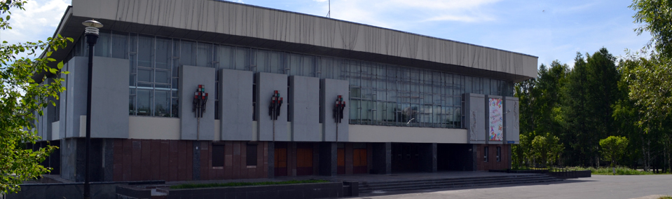

«Дом творчества и досуга «Юность»  Google Maps
Google Maps

История учреждения начинается с подписания Акта приемки «Межшкольного зала ритмики и танца» по улице Победы, 15, который был подписан и утвержден решением исполкома № 6 от 14 января 1985 года городского совета народных депутатов города Свердловск – 45.
12 июня 1985 года, в день открытия молодежного фестиваля городов ЗАТО Урала «Каменный пояс дружбы», с момента проведения конкурса дискотек закрытых городов, и начал свою работу «Межшкольный зал ритмики и танца «Юность». Самый большой в городе танцпол (1200 кв. м.), который вмещает 350 танцующих пар, бар, балкон – танцзал «Юность» стал уникальным местом в городе для проведения дискотек и массовых мероприятий. У жителей города, само здание оригинальной архитектуры для того времени – вызывало большой ажиотаж, и стремление любой ценой попасть туда на мероприятие.
До 1992 г. Танцзал «Юность» входил в структуру городского «Лесопарка», в дальнейшем переименованного в «Парк Культуры и Отдыха». С 1994 г. учреждение носит название «Дом творчества молодежи «Юность» и становится самостоятельным. В 2011году в составе ДТМ «Юность» появилось новое структурное подразделение - «Клуб «Звезда». С 2012года ДТМ «Юность» переименован в Муниципальное бюджетное учреждение «Дом творчества и досуга «Юность».